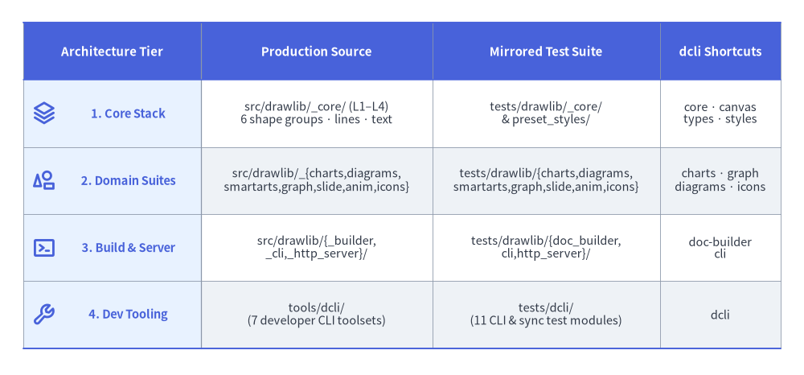
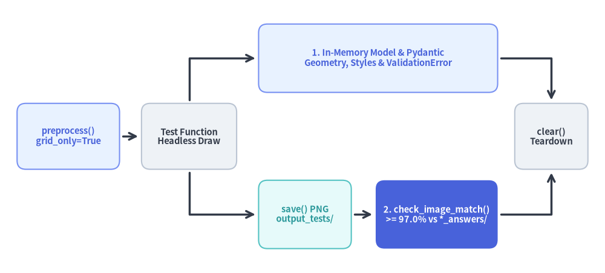

Test Architecture: Hierarchy & Headless Verification
Testing a 2D illustration and multi-format document engine requires verifying both exact geometric invariants in memory and rendered visual output across Linux, Windows, and macOS—without opening GUI windows or writing brittle tests.

Source Code
from drawlib.canvas import save, setup
from drawlib.icons import phosphor
from drawlib.smartarts import Table
from drawlib.styles import Colors, Styles
setup(width=120, height=56)
table = Table(
cell_style=Styles.White,
text_style=Styles.Dark.patch(text_size=10.5),
header_cell_style=Styles.PrimaryFlat,
header_text_style=Styles.WhiteBold.patch(text_size=10.8),
border_style=Styles.MutedThin,
)
table.set_style_cell_evenodd(
even_color=Styles.Neutral.shape_fill_color,
even_text_style=Styles.Dark.patch(text_size=10.5),
odd_color=Colors.White,
odd_text_style=Styles.Dark.patch(text_size=10.5),
)
table.set_style_cell_rowheader(
background_color=Styles.PrimaryNeutral.shape_fill_color,
text_style=Styles.PrimaryBold.patch(text_size=10.5, xy_shift=(2.4, 0.0)),
)
table.set_style_cell_header(
background_color=Styles.PrimaryFlat.shape_fill_color,
text_style=Styles.WhiteBold.patch(text_size=10.8),
)
table.set_style_border(
top=Styles.PrimaryBold.patch(line_width=1.4),
top2=Styles.PrimaryBold.patch(line_width=1.1),
bottom=Styles.PrimaryBold.patch(line_width=1.4),
left2=Styles.MutedThin.patch(line_width=0.9),
between_columns=Styles.MutedThin.patch(line_width=0.6),
between_rows=Styles.MutedThin.patch(line_width=0.6),
)
rows = [
["Architecture Tier", "Production Source", "Mirrored Test Suite", "dcli Shortcuts"],
[
"1. Core Stack",
"src/drawlib/_core/ (L1–L4)\n6 shape groups · lines · text",
"tests/drawlib/_core/\n& preset_styles/",
"core · canvas\ntypes · styles",
],
[
"2. Domain Suites",
"src/drawlib/_{charts,diagrams,\nsmartarts,graph,slide,anim,icons}",
"tests/drawlib/{charts,diagrams,\nsmartarts,graph,slide,anim,icons}",
"charts · graph\ndiagrams · icons",
],
[
"3. Build & Server",
"src/drawlib/{_builder,\n_cli,_http_server}/",
"tests/drawlib/{doc_builder,\ncli,http_server}/",
"doc-builder\ncli",
],
[
"4. Dev Tooling",
"tools/dcli/\n(8 developer CLI toolsets)",
"tests/dcli/\n(12 CLI & sync test modules)",
"dcli",
],
]
table.draw_flexible(
xy=(3.5, 52.5),
column_widths=[26.5, 34.5, 34.0, 18.0],
row_heights=[8.5, 10.0, 10.0, 10.0, 10.0],
data=rows,
align="top_left",
)
tier_icons = [
(39.0, phosphor.stack),
(29.0, phosphor.shapes),
(19.0, phosphor.terminal_window),
(9.0, phosphor.wrench),
]
for cy, icon_fn in tier_icons:
icon_fn((6.6, cy), width=3.6, style=Styles.PrimaryBold)
save()
1. Concept: The Dual-Verification Testing Strategy
Graphical libraries face a classic testing trade-off: pure bitmap assertions break over minor sub-pixel anti-aliasing differences across OS font engines, whereas pure data-model assertions miss visual bugs like clipped labels, inverted coordinates, or broken Matplotlib patches.
Drawlib combines both techniques inside a Dual-Verification Headless Pipeline orchestrated by tests/conftest.py and tests/utils.py:

Source Code
from drawlib.canvas import save, setup
from drawlib.diagrams.flow import End, FlowDiagram, Process, Start
from drawlib.styles import Styles
setup(width=124, height=56)
flow = FlowDiagram(
node_style=Styles.Neutral.patch(shape_r=1.8),
edge_style=Styles.DarkBold,
edge_text_style=Styles.DarkBold.patch(text_size=9.6),
)
init_node = flow.add(
Start(
"preprocess()\ngrid_only=True",
width=21.0,
height=13.5,
style=Styles.PrimaryNeutral,
text_style=Styles.PrimaryBold.patch(text_size=10.5),
),
xy=(10.5, 24.5),
)
exec_node = flow.add(
Process(
"Test Function\nHeadless Draw",
width=19.5,
height=13.5,
style=Styles.Neutral.patch(shape_r=1.8),
text_style=Styles.DarkBold.patch(text_size=10.5),
),
xy=(35.25, 24.5),
)
prop_branch = flow.add(
Process(
"1. In-Memory Model & Pydantic\nGeometry, Styles & ValidationError",
width=49.0,
height=14.0,
style=Styles.PrimaryNeutral.patch(shape_r=1.8),
text_style=Styles.PrimaryBold.patch(text_size=10.5),
),
xy=(74.0, 40.5),
)
save_node = flow.add(
Process(
"save() PNG\noutput_tests/",
width=19.0,
height=14.0,
style=Styles.SecondaryNeutral.patch(shape_r=1.8),
text_style=Styles.SecondaryBold.patch(text_size=10.5),
),
xy=(59.0, 8.5),
)
golden_node = flow.add(
Process(
"2. check_image_match()\n>= 97.0% vs *_answers/",
width=25.0,
height=14.0,
style=Styles.PrimaryFlat.patch(shape_r=1.8),
text_style=Styles.WhiteBold.patch(text_size=10.5),
),
xy=(86.0, 8.5),
)
teardown_node = flow.add(
End(
"clear()\nTeardown",
width=15.0,
height=13.5,
style=Styles.Neutral,
text_style=Styles.DarkBold.patch(text_size=10.5),
),
xy=(109.5, 24.5),
)
init_node.connect(exec_node, padding=0.7)
exec_node.connect(prop_branch, start_side="top", end_side="left", padding=0.7).via((35.25, 40.5))
exec_node.connect(save_node, start_side="bottom", end_side="left", padding=0.7).via((35.25, 8.5))
save_node.connect(golden_node, padding=0.7)
prop_branch.connect(teardown_node, start_side="right", end_side="top", padding=0.7).via((109.5, 40.5))
golden_node.connect(teardown_node, start_side="right", end_side="bottom", padding=0.7).via((109.5, 8.5))
flow.draw(xy=(3.5, 3.5))
save()
- Branch 1 — In-Memory Model &
@validate_callAssertions: Fast unit tests verify coordinate solvers, bounding-box math, mutable component.itemsstate, SQLite cache keys, and PydanticValidationErrorboundaries directly in memory without touching disk. - Branch 2 — Automatic Golden-Image Regression (
pytest_runtest_call): Whenever a test saves a PNG underoutput_tests/,tests/conftest.pyautomatically compares the rendered bytes against the committed reference PNG in<test_module>_answers/viacheck_image_match().
2. Positioning: The 163-Module Structural Layout
The repository's 163 test_*.py modules (151 under tests/drawlib/ and 12 under tests/dcli/) mirror internal implementation boundaries rather than duplicating thin public re-export facades:
- Core Stack (
tests/drawlib/_core/&tests/drawlib/preset_styles/): Mirrorssrc/drawlib/_core/(l1_core,l2_types,l3_colors,l3_external,l3_fonts,l3_images,l3_math,l3_styles, andl4_canvas—where all 6 shape categories, lines, text, and image primitives live undertests/drawlib/_core/l4_canvas/). - Domain Component Suites (
tests/drawlib/{charts,diagrams,smartarts,graph,slide,anim,icons,release_assets}/): Mirrorssrc/drawlib/_{charts,diagrams,smartarts,graph,slide,anim,icons}/and_release_assets.py, pairing layout/validation tests with<test_stem>_answers/golden PNG directories. - Builders, CLI & HTTP Server (
tests/drawlib/{doc_builder,cli,http_server}/): Mirrorssrc/drawlib/{_builder,_cli,_http_server}/, exercising Markdown/catalog compilation, API reference completeness (test_api_docs_completeness.py), DOCX/PPTX/PDF exporters, link validation, and the local preview server (alongsidetest_docexist.pyandtest_lazy_imports.pyat thetests/drawlib/root). - Developer Tooling (
tests/dcli/): Mirrorstools/dcli/across12test modules, verifying toolset discovery, shell autocompletion, docstring AST scanning, deterministic ZIP manifest syncing, GitHub Release note parsing and syncing (test_github_release_cli.py), PyPI SemVer checks, and Docker CLI command construction.
3. Details: Fixtures, RGB Histogram Diffing, and ./dcli test
3.1. Canvas Isolation & pytest_runtest_call (tests/conftest.py)
tests/conftest.py guarantees deterministic isolation across sequential and pytest-xdist workers through two mechanisms:
preprocess()Autouse Fixture (scope="function", autouse=True): SetsNO_COLOR="1"andTERM="dumb"for stable CLI output assertions, silences library warnings viadrawlib_settings._set_suppress_warning(True), initializes a clean headless canvas withsetup(grid_only=True)beforeyield, and executesclear()afteryieldso figure state never leaks across tests.pytest_runtest_call(item)Hook Wrapper: Snapshots.pngmodification times insideoutput_tests/<subpath>/before executing the test body. If the test passes without raising an exception, every newly created or modified.pngis mapped totests/drawlib/<subpath>/<test_stem>_answers/<rel_name>.pngvia_get_answers_file_path()and verified during thecallphase.
3.2. 0.0–100.0 Pixel Match Percentage (tests/utils.py:check_image_match)
check_image_match() evaluates visual fidelity on a 0.0 to 100.0 percentage scale (never 0.0–1.0):
- Loads both the generated PNG bytes and golden reference PNG in memory via Pillow and normalizes both to
"RGB". - Rejects mismatched dimensions immediately (
img1.size != img2.size). - Computes
ImageChops.difference(img1, img2).convert("L").histogram()[0], which counts the exact number of pixels with zero luminance difference (R, G, Bidentical), and divides bywidth * height * 100: $$\text{match_percentage} = \frac{\text{hist}[0]}{\text{width} \times \text{height}} \times 100.0$$ tests/conftest.pyenforces a default threshold of97.0(97.0%exact pixel match), absorbing minor FreeType/platform anti-aliasing variance along glyph edges while catching any geometry, color, or layout regression. Individual tests tighten or relax tolerance on the same0.0–100.0scale using@pytest.mark.image_threshold:
import pytest
@pytest.mark.image_threshold(98.5)
def test_precision_badge_alignment() -> None:
...
3.3. 18 Module Shortcuts, Parallel Execution & Cross-OS CI (tools/dcli/test.py)
./dcli test wraps uv run pytest -s with 18 MODULE_SHORTCUTS for sub-second targeted feedback during development:
- Top-Level Suites (2):
drawlib(tests/drawlib/),dcli(tests/dcli/). - Core & Engine Shortcuts (7):
core(_core/),types(_core/l2_types/),styles(_core/l3_styles/),fonts(_core/l3_fonts/),images(_core/l3_images/),canvas(_core/l4_canvas/),preset-styles(preset_styles/). - Domain, Builder & CLI Shortcuts (9):
icons,smartarts,charts,diagrams,graph,slide,anim,cli,doc-builder(doc_builder/).
# Fast targeted iteration on a shortcut or explicit test file
./dcli test target canvas
./dcli test target doc-builder
# Full suite (--parallel and --cov=drawlib enabled by default on 'all' and 'drawlib')
./dcli test all --cov-report
- Default Parallelism & Coverage: On
./dcli test alland./dcli test drawlib,--parallel(-n auto --dist loadfile, grouping each test module onto a single worker so module-scopedoutput_tests/directories never race) and--cov(--cov=drawlib, with--cov-reportadding--cov-report=term-missing) are enabled by default. - Continuous Integration & On-Demand Cross-OS Matrix (
.github/workflows/ut_github.yml): Runs the full test suite in parallel on every push and pull request tomainonubuntu-latest(Python3.12) viaut_template.yml, while exposingworkflow_dispatchmodes (fullfor all 3 OSes × Python3.11/3.12/3.13/3.14,all-os, orubuntu-only) for on-demand cross-platform verification.
Next, explore how live repository dogfooding and static quality gates verify end-to-end documentation builds in Dogfooding & Quality Gates.